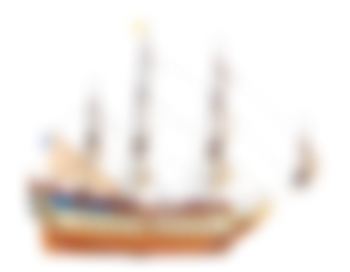
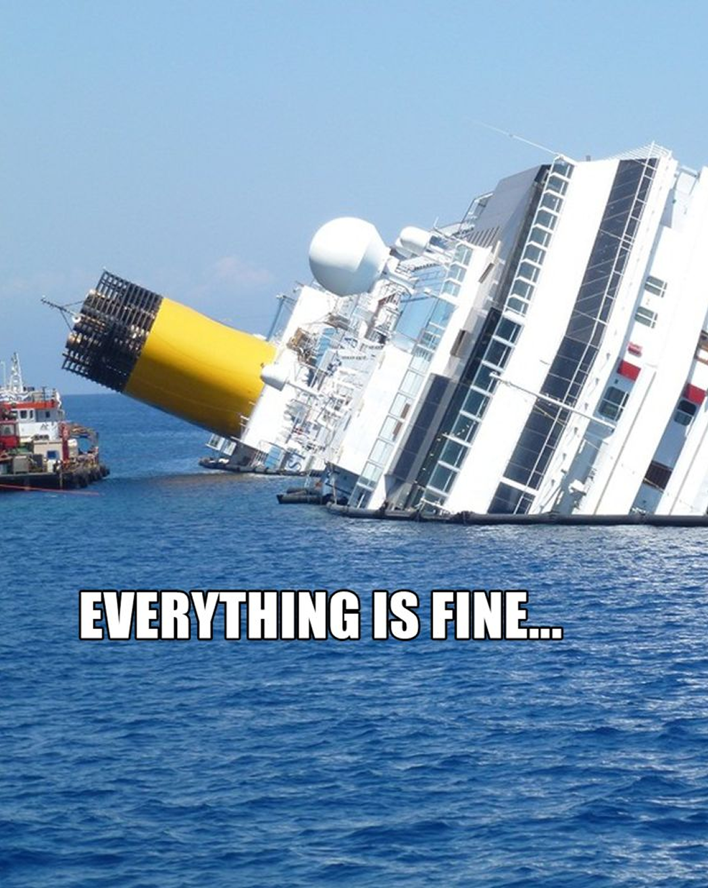
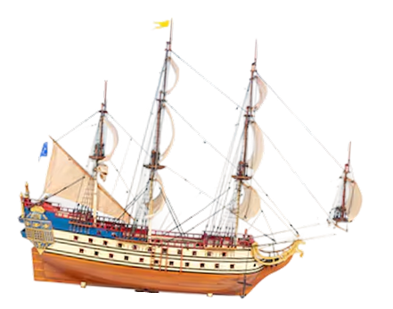
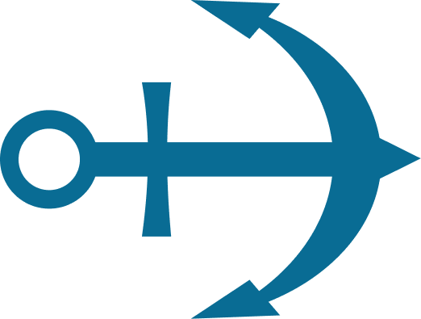
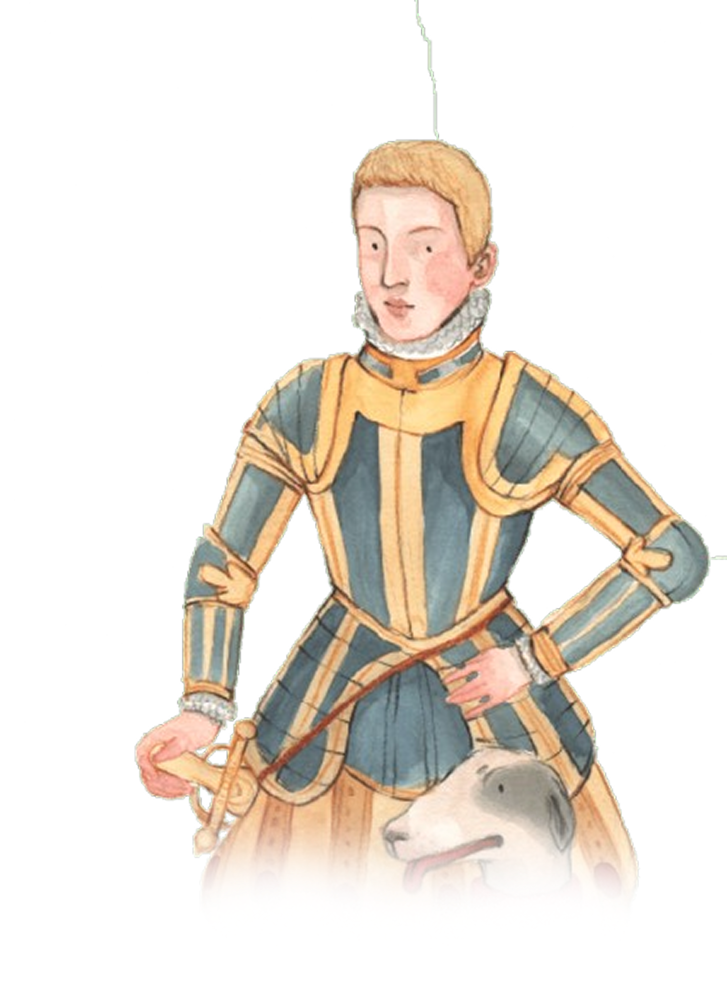

O NAVIO CHEGA AGORA!





Ficar à espera de alguém ou algo que nunca aparecerá.
Ser enganado depois de ter confiado em algo ou alguém.
Ficar decepcionado/a.
APÓS O DESAPARECIMENTO DE D. SEBASTIÃO, O POVO ESPERAVA NO ALTO DE SANTA CATARINA, EM LISBOA, PELO SEU REGRESSO, QUE NUNCA ACONTECEU.

FAMÍLIAS ESPERAVAM NO CAIS O RETORNO DE NAVIOS COM FAMILIARES OU RIQUEZAS QUE NUNCA VOLTAM.
DURANTE AS INVASÕES NAPOLEÓNICAS, MILHARES DE PESSOAS ESPERAVAM NO PORTO O RETORNO DE SOLDADOS QUE NUNCA REGRESSARAM.